| |
モンスター |
植物 |
| A |
Dryad
Titan
Tsuki wolf |
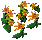
orfluer flowers |
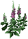
foxglove flowers |
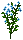
亜麻
[Pub56新規] |
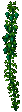
hops plant |
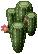
cactus plant |
| B |
Hiryu
Terathan warrior
Wisp |
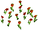
poppies |
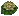
water lily |
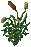
cattails
ガマ |
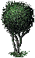
spider tree |
: |
| C |
Ant lion
Mummy
Serpentine dragon |
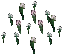
snowdrops plant |
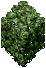
hedge plant |
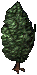
juniper bush |
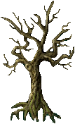
cypress tree |
: |
| D |
Juka mage
Kappa
Plague beast |
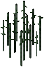
sugar canes |
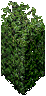
hedge plant |
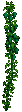
hops plant |
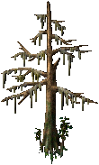
cypress tree |
: |
| 上記12種のモンスター |
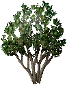
cocoa tree |
※モンスターグループは
うおえんさんの並びに合わせています。
Exodus Minionが落とす種は、Vanillaになります。